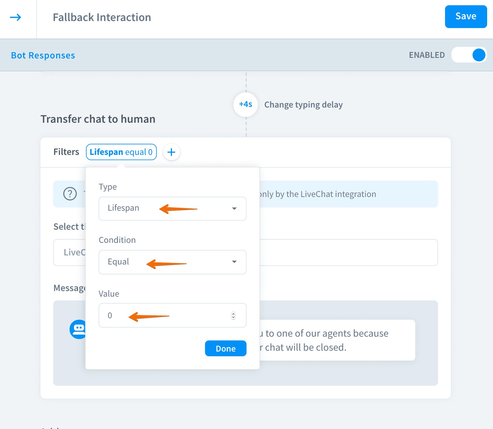

Last update:
Add the transfer action to your story to redirect the chat to a human agent when the bot cannot handle.
Chatbots can handle the burden of repetitive and predictable cases. Some customers may require human attention. In these cases, you can program the bot to automatically transfer these cases to your customer support team that will use their human care to resolve the problem.
The previous transfer action and trigger aren't supported anymore by BotEngine. Please, use the transfer action instead.
Configure the transfer action
- Make sure that your LiveChat integration is active.
- Select the interaction that you want to use with the bot transfer action.
- In the bot responses** go to the LiveChat section**.
- Select the transfer.
- Now you will see the following window with the transfer settings:
- Select the group - decide to which LiveChat group chats are going to be transferred to or leave the field empty to keep the assigned conversation within the same group as it has started.
- Setup the offline message - create a message to be displayed when your agents aren’t available.

- Additionally, you can apply filters to the transfer action and messages, that will be shown before the action occurs.
Redirect chats to human agents when the query isn’t recognized
Instead of creating a path that leads to the chat transfer, you can create a rule that triggers the transfer action when your bot doesn’t understand the client. To do so, we’ll use the default fallback interaction.
This example uses the default general settings: confidence score = 0.6, lifespan = 2.
- Go to the fallback interaction. If you haven’t done any changes, it probably looks like this.
- Now, let’s add a filter to it. Set the condition as
IF LIFESPAN IS GREATER THAN 0. It means that if the user entered an unrecognized query for the first time, the bot would reply with the text message. - We want that if the bot doesn’t understand the client for the second time, the chat is transferred to the customer support team. Let’s add a transfer action first!
- We need to add a filter again. This time we want that this action is triggered when the bot doesn’t match the phrase for the second time. Select
IF LIFESPAN EQUALS 0and save the interaction.  - Let check how does it work.
We always recommend experimenting with the filters to find the right solution for your scenario.